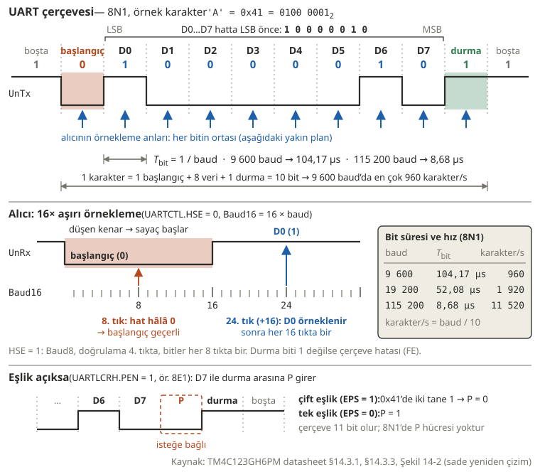
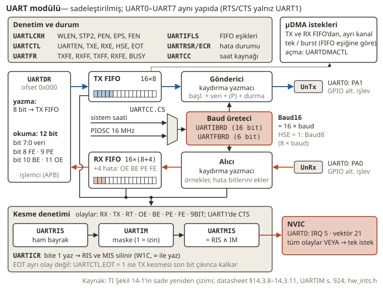
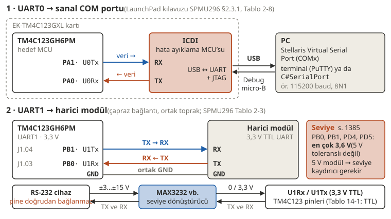
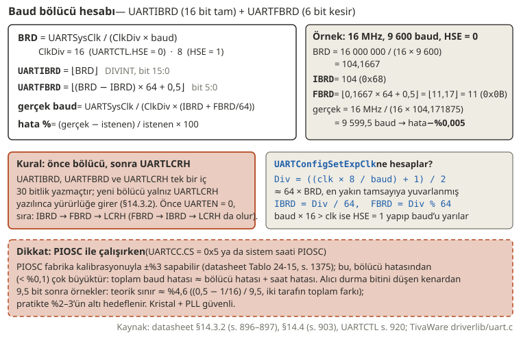
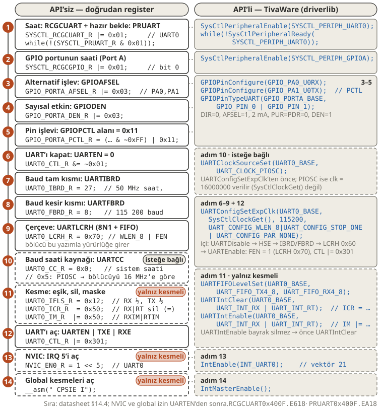
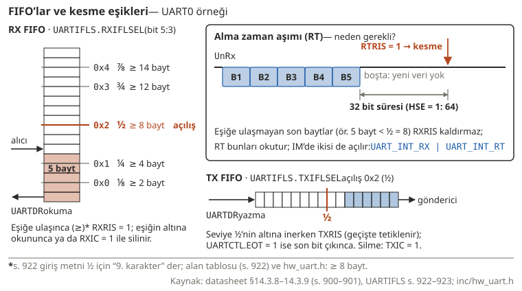

UART ve Seri Port
Mikrodenetleyicinin dış dünyayla en eski ve en yaygın konuşma yolu asenkron seri haberleşmedir. Bu notta TM4C123GH6PM'nin UART modülüyle bir bilgisayara ve başka cihazlara bayt göndermeyi ve almayı öğreneceğiz: çerçeve yapısı, baud hesabı, FIFO'lar, yoklama ve kesmeli alma, register düzeyinde ve TivaWare ile örnekler; sonunda da PC tarafında C# ile basit bir arayüz. Kesme altyapısı (NVIC, vektör tablosu, ISR kuralları) Zamanlayıcılar notunda, sıcaklık ölçümü ADC notunda anlatıldığı için burada tekrar edilmiyor.
Bu notun sonunda öğrenci:
- Senkron ve asenkron seri haberleşmeyi ayırt edebilir; UART çerçevesini (başlangıç biti, LSB önce veri, eşlik, durma biti) bir bayt için çizebilir ve verilen baud hızı için bit ve karakter süresini hesaplayabilir.
- TM4C123 UART modülünün yapısını (8 UART, 16×8 TX ve 16×12 RX FIFO, baud üreteci, kesme kaynakları) ve LaunchPad'de UART0'ın (PA0/PA1) ICDI üzerinden sanal COM portuna bağlandığını açıklayabilir.
- Verilen saat ve baud için IBRD, FBRD değerlerini ve baud hatasını hesaplayabilir; saat kaynağının doğruluğunun (PIOSC ±%3) haberleşmeye etkisini tartışabilir.
- UART'ı şu sırayla başlatabilir: 1 RCGCUART (+ PRUART bekle) → 2 RCGCGPIO → 3 GPIOAFSEL → 4 GPIODEN (+ isteğe bağlı sürüş akımı) → 5 GPIOPCTL → 6 UARTEN = 0 → 7 UARTIBRD → 8 UARTFBRD → 9 UARTLCRH → 10 UARTCC → 11 kesme ayarı (UARTIFLS, UARTICR, UARTIM) → 12 UARTEN = 1 → 13 NVIC → 14 global izin.
- Veriyi yoklama (UARTFR.TXFF / RXFE) ve kesme (RX, RT) ile gönderip alabilir; ISR'de bayrağı UARTICR'ye
=ile yazarak temizleyip FIFO'yu boşaltabilir. - Aynı uygulamayı doğrudan register erişimiyle ve TivaWare fonksiyonlarıyla (
GPIOPinConfigure,UARTConfigSetExpClk,UARTCharPut,UARTCharGet,UARTIntRegister…) yazabilir; sayıları elle ASCII metne çevirebilir. - PC tarafında C#
SerialPortile port açıp veri gönderebilir,DataReceivedolayında gelen veriyiInvokeile arayüze aktarabilir.
1. Seri haberleşme ve UART çerçevesi
Senkron ve asenkron
Seri haberleşmede bitler tek bir telden art arda gönderilir; az tel ve basit konnektör gerektirdiği için çevre birimleri ve bilgisayarlarla haberleşmede tercih edilir. Alıcının her biti doğru anda okuyabilmesi için zamanlama bilgisi iki yolla taşınır:
- Senkron: Veriyle birlikte ayrı bir saat hattı da gönderilir; alıcı biti saat kenarında okur. SPI (SSI) ve I2C bu türdendir.
- Asenkron: Saat hattı yoktur. İki taraf hızda (baud) önceden anlaşır ve her biri kendi saatini kullanır. Zamanlama, her karakterin başındaki başlangıç bitinin düşen kenarından çıkarılır. UART (Universal Asynchronous Receiver/Transmitter) bu işi yapan donanımdır.
İki cihaz arasında en az üç tel vardır: bir tarafın TX ucu diğerinin RX ucuna (ve tersi) bağlanır, üçüncüsü ortak topraktır (GND). İki yön bağımsızdır (tam çift yönlü, full duplex).
UART çerçevesi
Hat boştayken lojik 1'dedir (boşta 1, idle/mark). Her karakter bir çerçeve içinde gider (datasheet §14.3.1, Şekil 14-2, s. 895–896):
- Başlangıç biti (start): 1 bit süresi boyunca 0. Hattın 1'den 0'a inmesi alıcıya "karakter başlıyor" der.
- Veri bitleri: 5, 6, 7 ya da 8 bit; en anlamsız bit (LSB) önce gönderilir. Bu derste her zaman 8 bit kullanılır.
- Eşlik biti (parity, isteğe bağlı): Çift eşlikte veri + eşlik bitlerindeki 1'lerin sayısı çift, tek eşlikte tek olacak şekilde seçilir. Tek bitlik hataları yakalar, düzeltmez.
- Durma biti (stop): 1 ya da 2 bit süresi boyunca 1. Hattı bir sonraki başlangıç biti için yeniden 1'e getirir.
Ayar kısaca "8N1" diye yazılır: 8 veri biti, eşlik yok (None), 1 durma biti. 8N1'de bir karakter 1 + 8 + 1 = 10 bit sürer. Örnek olarak 'A' = 0x41 = 0100 00012 hatta şu sırayla çıkar (Şekil 1):
…1 1 | 0 | 1 0 0 0 0 0 1 0 | 1 | 1 1… (boşta | başlangıç | bit0 … bit7 | durma | boşta)
Eşlik açık olsaydı 0x41'de iki tane 1 olduğu için çift eşlik biti 0, tek eşlik biti 1 olurdu.

'A' = 0x41 (veri bitleri hatta 1 0 0 0 0 0 1 0 sırasıyla). Bit süresi Tbit = 1/baud: 9 600 baud için ≈ 104,2 µs, 115 200 baud için ≈ 8,68 µs.Alıcı nasıl okur? Alıcı hattı baud hızının 16 katı bir saatle örnekler. Düşen kenardan 8 örnek (yarım bit) sonra hat hâlâ 0 ise başlangıç biti geçerlidir; sonra her 16 örnekte bir, yani her bitin ortasında okur. Durma biti yerinde 1 yoksa çerçeve hatası bildirir (s. 897). Bitin ortasında okumak küçük saat farklarına pay bırakır (Bölüm 4).
Baud hızı ve bit süresi
Baud, hattaki saniyedeki sembol (burada bit) sayısıdır. UART'ta baud = bit/s'dir; ama başlangıç ve durma bitleri de sayıldığından yararlı veri hızı daha düşüktür:
| Baud | Tbit = 1/baud | 8N1 karakter süresi (10 bit) | En çok karakter/s |
|---|---|---|---|
| 9 600 | 104,17 µs | 1,042 ms | 960 |
| 115 200 | 8,68 µs | 86,8 µs | 11 520 |
Standart hızlar (1 200, 2 400, 4 800, 9 600, 19 200, 38 400, 57 600, 115 200…) eski modem hızlarından gelir. İki tarafın hızı, veri bit sayısı, eşliği ve durma bit sayısı aynı olmalıdır; aksi halde alıcı bitleri yanlış yerde örnekler ve ekranda anlamsız karakterler görülür.
2. TM4C123 UART modülü
Özellikler ve blok yapı
Datasheet Bölüm 14'e göre (s. 893) TM4C123GH6PM'de 8 UART (UART0–UART7) vardır. Başlıca özellikleri:
- Kesirli bölücülü baud üreteci: normal hızda (÷16) 5 Mbps'e, yüksek hızda (÷8, HSE) 10 Mbps'e kadar.
- Ayrı 16 girişlik TX ve RX FIFO'ları; kesme eşikleri 1/8, 1/4, 1/2, 3/4, 7/8.
- Başlangıç, durma ve eşlik bitleri donanımla üretilir ve ayıklanır; 5–8 veri biti; çift, tek, sabit ya da eşliksiz; 1 ya da 2 durma biti; hat kesmesi (break) üretme/algılama.
- Hata algılama: taşma (overrun), hat kesmesi (break), eşlik (parity), çerçeve (framing).
- Bu notta kullanılmayan ek işlevler: IrDA, ISO 7816 akıllı kart, UART1'de RTS/CTS, 9-bit kip, iç geri döngü, μDMA.

Program yalnız UARTDR ile konuşur: yazınca bayt TX FIFO'ya girer ve donanım onu çerçeveleyip gönderir; okuyunca RX FIFO'nun en eski girişi gelir (Şekil 2). UARTCTL'nin açılış değeri 0x300'dür: TXE ve RXE 1, UARTEN dahil diğer bitler 0 (s. 895, 918).
FIFO'lar
İki FIFO da 16 giriş derinliğindedir; RX FIFO her girişte 4 hata bitini de sakladığı için 12 bit genişliğindedir (§14.3.3, s. 897; UARTDR, s. 906; §14.3.8 ve blok şema ikisini de "16x8" verir). FIFO'lar açılışta kapalıdır (UARTLCRH.FEN = 0) ve 1 baytlık tutucu register gibi davranır. UARTConfigSetExpClk sonunda UARTEnable'ı çağırır, o da FEN'i 1 yapar; API'li programlarda FIFO bu yüzden açıktır. TI kitapçığının "FIFO'lar açılışta açıktır" ifadesi buradan gelir; kendi dipnotu datasheet'e göre kapalı olduğunu belirtir.
115 200 baud'da bir karakter 86,8 µs'de gelir; FIFO açıkken işlemci ≈ 1,4 ms'lik (16 karakter) bir gecikmeyi veri kaybetmeden karşılar. RX FIFO doluyken yeni karakter gelirse taşma hatası (OE) olur; FIFO korunur, yeni karakter kaybolur (s. 908).
3. Pinler ve LaunchPad bağlantısı
UART0–UART7 pinleri
UART sinyalleri GPIO pinlerinin alternatif işlevidir. Parantezdeki sayı GPIOPCTL'nin PMCn alanına yazılan koddur (datasheet Tablo 14-1, s. 895; Tablo 23-5, s. 1351). Son iki sütun TivaWare driverlib/pin_map.h sabitleri ve LaunchPad konnektörüdür (SPMU296, Tablo 2-3 – 2-6):
| Modül | Rx (PMC) | Tx (PMC) | TivaWare sabiti | LaunchPad |
|---|---|---|---|---|
| UART0 | PA0 (1) | PA1 (1) | GPIO_PA0_U0RX, GPIO_PA1_U0TX | ICDI sanal COM portu; konnektörde yok |
| UART1 | PB0 (1) / PC4 (2) | PB1 (1) / PC5 (2) | GPIO_PB0_U1RX, GPIO_PB1_U1TX (GPIO_PC4_U1RX…) | PB0/PB1: J1.03/J1.04 (en çok 3,6 V); PC4/PC5: J4.04/J4.05 |
| UART2 | PD6 (1) | PD7 (1) | GPIO_PD6_U2RX, GPIO_PD7_U2TX | J4.08 / J4.09 (PD7 kilitli) |
| UART3 | PC6 (1) | PC7 (1) | GPIO_PC6_U3RX, GPIO_PC7_U3TX | J4.06 / J4.07 |
| UART4 | PC4 (1) | PC5 (1) | GPIO_PC4_U4RX, GPIO_PC5_U4TX | J4.04 / J4.05 |
| UART5 | PE4 (1) | PE5 (1) | GPIO_PE4_U5RX, GPIO_PE5_U5TX | J1.05 / J1.06 |
| UART6 | PD4 (1) | PD5 (1) | GPIO_PD4_U6RX, GPIO_PD5_U6TX | Konnektörde yok (USB hattı) |
| UART7 | PE0 (1) | PE1 (1) | GPIO_PE0_U7RX, GPIO_PE1_U7TX | J2.03 / J3.07 |
UART1'in RTS/CTS pinleri PF0/PF1 (PMC 1) ya da PC4/PC5 (PMC 8) üzerindedir; PC4/PC5 UART1 ile UART4 arasında paylaşılır. GPIO pinleri giriş olarak 5 V'a dayanıklıdır, ama PD4, PD5, PB0 ve PB1 3,6 V ile sınırlıdır (s. 649). PD7 NMI pini olduğu için kilitlidir; UART2 için önce GPIOLOCK/GPIOCR ile açılır (GPIO notu, PF0 / PD7 kilidi).
Pinin UART işlevine alınması
Datasheet §14.4 önce saat ve GPIO tarafını (adım 1–5) anlatır (s. 902–903); GPIO bölümü de dijital alternatif işlev için AFSEL, DEN ve PCTL'nin birlikte ayarlanmasını ister (s. 649). PA0/PA1 için: RCGCGPIO bit0 = 1 (Port A saati), GPIOAFSEL bit1:0 = 1, GPIODEN bit1:0 = 1, GPIOPCTL'de PMC0 = PMC1 = 1 (0x00000011; pin başına 4 bitlik alan). GPIODIR önemsizdir: AFSEL = 1 iken yönü çevre birimi belirler (GPIO notu, register tablosu).
Datasheet UART0 pinlerinin açılışta UART işlevinde olduğunu söyler (s. 894); ancak Tablo 10-1'e göre (s. 650) PA[1:0]'ın açılış değerleri GPIOPCTL = 0x1, GPIOAFSEL = 0, GPIODEN = 0'dır. Yani AFSEL ve DEN yine de 1 yapılmalıdır.
LaunchPad sanal COM portu
EK-TM4C123GXL'deki ikinci TM4C123 yongası ICDI'dir (In-Circuit Debug Interface). Hata ayıklama USB kablosu takılınca PC'de hem hata ayıklayıcı hem sanal COM portu olarak görünür; bu port hedef işlemcinin PA0 (U0RX) ve PA1 (U0TX) pinlerine bağlıdır (SPMU296 §2.3.1, Tablo 2-8, s. 12). UART0'a yazılan her bayt ek donanım olmadan PC'deki terminale ya da C# uygulamasına ulaşır (Şekil 3). PA0/PA1 konnektörlere çıkarılmamıştır; dış bir modül (GPS, Bluetooth, başka kart) için UART1, UART3, UART5 gibi başka bir modül kullanılır.

SerialPort). Harici bağlantıda (ör. UART1, PB0/PB1) TX↔RX çapraz bağlanır, GND'ler birleştirilir; 3,3 V TTL ile RS-232 (±3…±15 V, ters mantık) doğrudan bağlanamaz.TTL ve RS-232 seviyeleri
TM4C123 pinleri 3,3 V TTL seviyesindedir (lojik 1 ≈ 3,3 V, boşta 1). Eski PC'lerdeki DB9 seri port ise RS-232 seviyesini kullanır: lojik 1 için −3…−15 V, lojik 0 için +3…+15 V, yani ters mantık. Doğrudan bağlanırsa negatif gerilim pine zarar verir; arada MAX3232 gibi bir seviye dönüştürücü ya da 3,3 V'luk bir USB–TTL dönüştürücü kullanılır. 5 V TTL bir cihazda Tiva'nın RX pini 5 V'a dayanıklı olmalı (PB0, PB1, PD4, PD5 değil), karşı taraf da 3,3 V'u lojik 1 saymalıdır.
4. Baud hızı hesabı
Formül: IBRD ve FBRD
Baud üreteci, UART saatini 22 bitlik bir sayıya böler: 16 bitlik tam kısım (UARTIBRD.DIVINT) ve 6 bitlik kesir kısmı (UARTFBRD.DIVFRAC). Datasheet §14.3.2'ye göre (s. 896):
BRD = UARTSysClk / (ClkDiv · baud) ClkDiv = 16 (HSE = 0) ya da 8 (HSE = 1)
IBRD = ⌊BRD⌋ · FBRD = ⌊(BRD − IBRD) · 64 + 0,5⌋ · gerçek baud = UARTSysClk / (ClkDiv · (IBRD + FBRD/64))
Kesir kısmı 1/64'lük adımlarla ifade edildiği için 64 ile çarpılıp en yakın tamsayıya yuvarlanır. Hata yüzdesi (gerçek − istenen) / istenen × 100 ile bulunur (Şekil 4).

UARTConfigSetExpClk aynı sonucu 64 · BRD'yi yuvarlayarak bulur. PIOSC'nin ±%3'lük hatası bölücü hatasından çok büyüktür.Sayısal örnekler
Ders kodlarının hepsi SysCtlClockSet(SYSCTL_SYSDIV_4 | SYSCTL_USE_PLL | …) ile 50 MHz kullanır (PLL 400 MHz → ÷2 → ÷4). TI'ın Lab 4 gibi örneklerindeki SYSCTL_SYSDIV_5 40 MHz verir (Lab 12 SYSDIV_4, 50 MHz); saat ayarı yapılmamış bir program PIOSC'den 16 MHz'te çalışır (Timer notu, saat frekansı). HSE = 0 (ClkDiv = 16):
| Saat | Baud | BRD | IBRD | FBRD | Gerçek baud | Hata |
|---|---|---|---|---|---|---|
| 16 MHz | 9 600 | 104,1667 | 104 | 11 | 9 599,5 | −%0,005 |
| 16 MHz | 115 200 | 8,6806 | 8 | 44 | 115 108 | −%0,080 |
| 20 MHz | 115 200 | 10,8507 | 10 | 54 | 115 274 | +%0,064 (datasheet örneği, s. 903) |
| 40 MHz | 115 200 | 21,7014 | 21 | 45 | 115 191 | −%0,008 |
| 50 MHz | 9 600 | 325,5208 | 325 | 33 | 9 600,2 | +%0,002 |
| 50 MHz | 115 200 | 27,1267 | 27 | 8 | 115 207 | +%0,006 |
Örnek hesap (50 MHz, 115 200): BRD = 50 000 000 / (16 · 115 200) = 27,1267 → IBRD = 27; 0,1267 · 64 + 0,5 = 8,61 → FBRD = 8; gerçek baud = 50 000 000 / (16 · 27,125) = 115 207. Kesir kısmı yazılmasaydı (FBRD = 0) 16 MHz/115 200'de baud 125 000 olur, hata +%8,5'e çıkardı; haberleşme tamamen bozulur.
Saat doğruluğu ve tolerans
Baud hatasının iki kaynağı vardır: bölücünün yuvarlanması (yukarıdaki tablo; genellikle %0,1'in altında) ve saat kaynağının hatası. LaunchPad'deki 16 MHz kristal birkaç on ppm (≈ ±%0,005) doğrulukla çalışır. İç osilatör PIOSC'nin doğruluğu ise fabrika kalibrasyonuyla ±%3'tür; ±%1 yalnız kullanıcının 7-bit yeniden kalibrasyonu yaptığı koşulda geçerlidir (Tablo 24-15, s. 1375). SysCtlClockSet çağrılmamış bir programda sistem saati PIOSC'dir; baud hatası da ±%3'e kadar çıkabilir.
Ne kadar fark tolere edilir? Datasheet UART için tolerans değeri vermez; aşağıdaki hesap genel bilgidir. 8N1'de son örnek (durma biti) düşen kenardan 9,5 bit sonra alınır ve örnekleme anı bitin ortasından 0,5 bitten az kaymalıdır. 16× örneklemenin 1/16 bitlik kenar belirsizliği de düşülünce iki tarafın toplam farkı için teorik sınır ≈ %4,6 ((0,5 − 1/16) / 9,5) bulunur; pratikte %2–3'ün altı hedeflenir (Experiment 10 föyü %2 verir). PIOSC'den çalışan bir Tiva çoğu kartta haberleşir ama bu garanti değildir; güvenilir haberleşme için kristal + PLL kullanılır.
HSE ve saat kaynağı (UARTCC)
- HSE (UARTCTL bit5): 0 iken ÷16, 1 iken ÷8; alıcı 8× örnekler (s. 920). En büyük baud HSE = 0'da saat/16 (80 MHz'te 5 Mbps), HSE = 1'de saat/8'dir.
UARTConfigSetExpClk, baud · 16 > saat ise HSE'yi kendisi 1 yapar. - UARTCC (s. 939):
0x0sistem saati (açılış),0x5PIOSC (16 MHz). PIOSC seçilirse baud sistem saatinden bağımsız kalır, bölücü 16 MHz'e göre hesaplanır; sistem saati en az 9 MHz olmalıdır (Run kipinde, s. 939). TivaWare:UARTClockSourceSet.
Dikkat: UARTCC = 0x5 iken baud, sistem saati kristalden gelse bile PIOSC'nin ±%3 doğruluğunu taşır (Tablo 24-15, s. 1375). TivaWare'de UARTClockSourceSet(UART0_BASE, UART_CLOCK_PIOSC) çağrısından sonra UARTConfigSetExpClk'e SysCtlClockGet() değil 16000000 verilir. Sistem saati kaynağında ise saat değişirse bölücü yeniden hesaplanmalıdır; API'li kodlarda saat SysCtlClockGet() ile, SysCtlClockSet'ten sonra alınır.
IBRD, FBRD ve LCRH yazma sırası
UARTIBRD, UARTFBRD ve UARTLCRH içeride 30 bitlik tek bir register oluşturur ve bu register yalnız UARTLCRH'ye yazıldığında güncellenir (s. 896). Bölücü değiştirildikten sonra LCRH'ye yazılmazsa yeni baud etkin olmaz. Geçerli sıralar: IBRD → FBRD → LCRH, FBRD → IBRD → LCRH, yalnız IBRD → LCRH ya da yalnız FBRD → LCRH. Bu yazmalar ve UARTCTL değişiklikleri UARTEN = 0 iken yapılmalıdır (s. 895, 918).
5. Register'lar ve taban adresler
Taban adresler ve kesme numaraları
Her UART'ın 4 KB'lık bir adres penceresi vardır; register adresi taban + ofset'tir (s. 904). Kesme numaraları datasheet Tablo 2-9'dan (s. 104–106); NVIC'te kesme numarası, TivaWare INT_UARTn sabitinde vektör numarası kullanılır (Timer notu, vektör tablosu).
Modül (UARTn_BASE) | Taban adres | Kesme no (EN biti) | Vektör no / ofset |
|---|---|---|---|
| UART0 | 0x4000C000 | 5 (EN0 bit5) | 21 / 0x054 |
| UART1 | 0x4000D000 | 6 (EN0 bit6) | 22 / 0x058 |
| UART2 | 0x4000E000 | 33 (EN1 bit1) | 49 / 0x0C4 |
| UART3 | 0x4000F000 | 59 (EN1 bit27) | 75 / 0x12C |
| UART4 | 0x40010000 | 60 (EN1 bit28) | 76 / 0x130 |
| UART5 | 0x40011000 | 61 (EN1 bit29) | 77 / 0x134 |
| UART6 | 0x40012000 | 62 (EN1 bit30) | 78 / 0x138 |
| UART7 | 0x40013000 | 63 (EN1 bit31) | 79 / 0x13C |
Saat register'ları: RCGCUART 0x400FE618 (bit n = UARTn, s. 344) ve PRUART 0x400FEA18 (salt okunur, bit n = 1 ise UARTn hazır, s. 410). Saat açıldıktan sonra UART register'larına erişmeden önce 3 sistem saati beklenmelidir (s. 904); saati kapalı modüle erişmek bus fault üretir (s. 344). Bir UART'ın bütün kesme olayları VEYA'lanarak tek bir NVIC kesmesine bağlanır (s. 901).
UART register tablosu
Datasheet Tablo 14-3 (s. 904). inc/tm4c123gh6pm.h'deki adlar modül numarasıyla kurulur: UART0_DR_R, UART2_LCRH_R… IrDA (UARTILPR, 0x020), μDMA (UARTDMACTL, 0x048) ve 9-bit kip register'ları bu notta kullanılmaz.
| Register | Ofset | Açılış | Görev | s. |
|---|---|---|---|---|
| UARTDR | 0x000 | 0 | Veri: yaz → TX FIFO; oku → RX FIFO (bit7:0 veri, bit11:8 hata). | 906 |
| UARTRSR / UARTECR | 0x004 | 0 | Okuma: son okunan karakterin hataları (OE, BE, PE, FE). Yazma: herhangi bir değer hataları temizler. | 908 |
| UARTFR | 0x018 | 0x90 | Bayraklar (salt okunur): TXFE, RXFF, TXFF, RXFE, BUSY. | 911 |
| UARTIBRD | 0x024 | 0 | Baud bölücü tam kısmı (DIVINT, bit15:0). | 914 |
| UARTFBRD | 0x028 | 0 | Baud bölücü kesir kısmı (DIVFRAC, bit5:0). | 915 |
| UARTLCRH | 0x02C | 0 | Veri uzunluğu, eşlik, durma biti, FIFO; yazılınca bölücü yüklenir. | 916 |
| UARTCTL | 0x030 | 0x300 | Denetim: UARTEN, HSE, LBE, TXE, RXE… | 918 |
| UARTIFLS | 0x034 | 0x12 | FIFO kesme eşikleri. | 922 |
| UARTIM | 0x038 | 0 | Kesme maskesi: 1 olan olay NVIC'e gider. | 924 |
| UARTRIS | 0x03C | 0 | Ham kesme durumu (salt okunur). | 927 |
| UARTMIS | 0x040 | 0 | Maskeli kesme durumu = RIS AND IM. | 930 |
| UARTICR | 0x044 | 0 | Kesme temizleme (W1C). | 933 |
| UARTCC | 0xFC8 | 0 | Baud saati: 0x0 sistem saati, 0x5 PIOSC. | 939 |
Sık kullanılan bitler
| Register | Bit | Ad | Anlamı |
|---|---|---|---|
| UARTFR | 7 | TXFE | TX FIFO boş (FEN = 0 ise tutucu register boş). |
| 6 | RXFF | RX FIFO dolu. | |
| 5 | TXFF | TX FIFO dolu: 1 iken UARTDR'ye yazılmaz, beklenir. | |
| 4 | RXFE | RX FIFO boş: 0 ise okunacak veri var. | |
| 3 | BUSY | Gönderim sürüyor; son karakterin durma biti çıkana kadar 1. | |
| UARTLCRH | 6:5 | WLEN | Veri uzunluğu: 0x0 = 5 … 0x3 = 8 bit (0x60). |
| 4 | FEN | FIFO etkin (0x10). | |
| 3 | STP2 | 2 durma biti. | |
| 2 / 1 | EPS / PEN | Çift eşlik / eşlik etkin (bit7 SPS: sabit eşlik, bit0 BRK: hat kesmesi gönder). | |
| UARTCTL | 9 / 8 | RXE / TXE | Alıcı / verici etkin (açılışta 1). |
| 7 | LBE | İç geri döngü: TX içeride RX'e bağlanır. | |
| 5 | HSE | Yüksek hız (÷8). | |
| 0 | UARTEN | UART etkin. | |
| UARTIM / RIS / MIS / ICR | 10 / 9 / 8 / 7 / 6 / 5 / 4 | OE / BE / PE / FE / RT / TX / RX | Taşma, hat kesmesi, eşlik, çerçeve hatası, alma zaman aşımı, gönderme, alma. Adlar …IM, …RIS, …MIS, …IC sonekini alır (ör. RXIM, RTRIS, RXIC). |
| UARTIFLS | 5:3 | RXIFLSEL | RX eşiği: 0x0 ≥ 1/8, 0x1 ≥ 1/4, 0x2 ≥ 1/2 (açılış), 0x3 ≥ 3/4, 0x4 ≥ 7/8 dolu. |
| 2:0 | TXIFLSEL | TX eşiği, aynı kodlarla (açılış 0x2, 1/2). Datasheet bunu "boşluk", TivaWare "doluluk" diliyle yazar. |
UARTDR okumada hata bitleri
UARTDR okunduğunda veri baytıyla birlikte o karaktere ait dört hata biti de gelir: bit11 OE (taşma), bit10 BE (hat kesmesi), bit9 PE (eşlik), bit8 FE (çerçeve) (s. 906–907). Karakter bu yüzden UART0_DR_R & 0xFF ile alınır; hata kontrolü gerekiyorsa aynı okumanın üst bitlerine bakılır. TivaWare'in UARTCharGet ve UARTCharGetNonBlocking fonksiyonları DR'nin tamamını int32_t olarak döndürür; sonuç char'a atanınca hata bitleri düşer. Hatalar UARTRSR'den de okunabilir ve UARTECR'ye herhangi bir değer yazılarak temizlenir (UART0_ECR_R = 0;). Baud uyumsuzluğunda en sık görülen hata FE'dir.
6. Başlatma adımları
Datasheet §14.4 (s. 902–903) önce saat ve GPIO tarafını (adım 1–5), sonra UART modülünü (adım 1–7) anlatır. Bu notta iki liste ve kesme adımları tek bir numaralı listede birleştirilmiştir; kod yorumlarındaki numaralar bu listeye göredir. Şekil 5 API'siz ve API'li yolu yan yana gösterir:

SysCtlPeripheralEnable, 3–4 GPIOPinTypeUART, 5 GPIOPinConfigure, 10 UARTClockSourceSet, 6–9 ve 12 UARTConfigSetExpClk, 11 UARTFIFOLevelSet/UARTIntClear/UARTIntEnable, 13 IntEnable, 14 IntMasterEnable. 11, 13, 14 yalnız kesmeli kullanımda.Adım adım
- UART saatini aç (RCGCUART): UART0 için bit0 = 1; PRUART bit0 = 1 olana kadar bekle. Datasheet ilk liste, adım 1.
- GPIO port saatini aç (RCGCGPIO): Port A, bit0 (+ PRGPIO bekle). Adım 2.
- GPIOAFSEL = 1: Rx ve Tx pinleri çevre birimine verilir. Adım 3.
- GPIODEN = 1: Dijital tampon açılır. Datasheet adım 4 burada isteğe bağlı sürüş akımı ve eğim ayarını anar; açılıştaki 2 mA yeterlidir.
- GPIOPCTL: PMCn alanlarına UART kodu (PA0/PA1 için 1) yazılır, diğer alanlar korunur. Adım 5.
- UARTEN = 0 (UARTCTL): Yapılandırma sırasında UART kapalı olmalıdır. Modül adım 1.
- UARTIBRD: Bölücünün tam kısmı. Modül adım 2.
- UARTFBRD: Bölücünün kesir kısmı. Modül adım 3.
- UARTLCRH: 8N1 + FIFO için
0x70, FIFO'suz0x60; bölücüyü de yükler. Modül adım 4. - UARTCC:
0x0sistem saati,0x5PIOSC. Modül adım 5 (adım 6, μDMA, bu notta yok). - Kesme ayarı (kesmeli kullanımda): UARTIFLS eşiği (isteğe bağlı), UARTICR ile bekleyen bayrakları temizleme, UARTIM'de RXIM/RTIM. Datasheet IFLS/IM/ICR için UART'ın kapalı olmasını açıkça istemez (s. 904 yalnız kontrol register'larından söz eder). TivaWare'in
UARTIntEnable,UARTIntClearveUARTFIFOLevelSetfonksiyonları UART'ı kapatmaz; TI Lab 12 de bunları UART açıkken çağırır. Bu yüzden API'li kodda ve 8.4'te bu adım 12'den sonra gelir.UARTIntRegisterkullanılıyorsa UARTIM'den önce çağrılır. - UARTEN = 1 (UARTCTL): TXE ve RXE ile birlikte (
|= 0x301). Modül adım 7. - NVIC: UART0 için EN0 bit5. ISR vektör tablosuna bağlanmış olmalıdır (startup dosyasında vektör 21 "UART0 Rx and Tx" ya da
UARTIntRegister). - Global kesme izni:
IntMasterEnable()(PRIMASK = 0; açılışta zaten 0, Timer notu, Geçit 3).
TivaWare karşılıkları
Basit karşılıklar Şekil 5'tedir; aşağıdaki fonksiyonların davranışı TivaWare 2.1.4 kaynak kodundan (driverlib/uart.c) doğrulanmıştır.
| Adım | TivaWare çağrısı | Ne yapar (register düzeyinde) |
|---|---|---|
| 6–9, 12 | UARTConfigSetExpClk(UART0_BASE, SysCtlClockGet(), 115200, UART_CONFIG_WLEN_8 | UART_CONFIG_STOP_ONE | UART_CONFIG_PAR_NONE) | UARTDisable (BUSY = 0 bekler, FEN = 0, UARTEN/TXE/RXE = 0); baud·16 > saat ise HSE = 1; bölücü = round(64·saat/(16·baud)), IBRD = bölücü/64, FBRD = bölücü%64; LCRH = ayar; sonunda UARTEnable: FEN = 1, UARTEN | TXE | RXE = 1. Ardından ayrıca UARTEnable çağırmak gereksizdir. |
| 11, 13 | UARTIntRegister(UART0_BASE, Fonksiyon) | Vektör tablosunu RAM'e taşıyıp 21. girişe fonksiyonu yazar ve IntEnable(INT_UART0)'ı da çağırır. |
| 11 | UARTIntEnable(UART0_BASE, UART_INT_RX | UART_INT_RT) | UARTIM |= 0x10 | 0x40; bekleyen bayrakları temizlemez. |
| veri | UARTCharPut / UARTCharPutNonBlocking | TXFF = 0 olana kadar bekler, sonra yazar / TXFF = 1 ise yazmadan false döner. |
| veri | UARTCharGet / UARTCharGetNonBlocking | RXFE = 0 olana kadar bekler / FIFO boşsa −1 döner. İkisi de DR'nin tamamını döndürür. |
| veri | UARTCharsAvail, UARTSpaceAvail, UARTBusy | RXFE = 0 mı? TXFF = 0 mı? BUSY = 1 mi? |
| kesme | UARTIntStatus(UART0_BASE, true) / UARTIntClear(…, durum) | MIS'i (false: RIS'i) okur / UARTICR = durum. |
7. Veri gönderme ve alma
Yoklama ve kesme
UARTFR'deki iki bayrak, yoklamalı haberleşmenin tamamıdır:
while(UART0_FR_R & 0x20) {} // TXFF = 1: FIFO dolu, bekle
UART0_DR_R = c; // FIFO'ya yazwhile(UART0_FR_R & 0x10) {} // RXFE = 1: FIFO boş, bekle
c = UART0_DR_R & 0xFF; // veri baytını alGönderme yoklamayla sorunsuzdur: FIFO doluysa işlemci en çok bir karakter süresi bekler. Almada ise verinin ne zaman geleceği bilinmez; bekleyen okuma programı durdurur. Ana döngü başka işler de yapıyorsa ya bloklamayan okuma (UARTCharsAvail ile, ders kodlarının çoğu gibi) ya da kesme kullanılır. Kesmenin yolu (çevre birimi maskesi → NVIC → PRIMASK) Timer notundakiyle aynıdır (Timer notu, NVIC).
FIFO eşikleri ve alma zaman aşımı
UART'ın alma tarafında iki kesme kaynağı birlikte kullanılır (§14.3.9, s. 900–901; Şekil 6):
- RX kesmesi (RXRIS): FIFO açıkken RX FIFO'daki karakter sayısı UARTIFLS'deki eşiğe ulaşınca kalkar (açılışta 1/2, yani ≈ 8 karakter); FIFO kapalıyken her karakterde. Datasheet'in iki yeri bu konuda farklıdır: §14.3.8 (s. 900) 1/4 eşiğinde kesmenin 4 bayt alındıktan sonra geldiğini, UARTIFLS açıklaması (s. 922) ise 1/2 eşiğinde 9. karakter alınırken geldiğini yazar. Bu notta yuvarlak olarak 1/2 ≈ 8 karakter denir. FIFO'yu RXFE = 1 olana dek boşaltan bir ISR için bu fark önemsizdir.
- Alma zaman aşımı (RT, RTRIS): RX FIFO boş değilse ve HSE = 0 iken 32 bit süresi (HSE = 1 iken 64) boyunca yeni karakter gelmezse kalkar: 115 200 baud'da ≈ 278 µs, 9 600 baud'da ≈ 3,3 ms. Eşiğe ulaşmayan son karakterler (ör. klavyeden tek tuş) bu kesmeyle alınır. RT, FIFO boşaltılınca ya da UARTICR.RTIC'ye 1 yazılınca temizlenir.
- TX kesmesi (TXRIS): TX FIFO doluluğu eşiğin altına inerken (geçişte) kalkar; UARTCTL.EOT = 1 ise son bitin çıkmasıyla. Bu notta gönderme yoklamayla yapılır.
RX ve RT bu yüzden birlikte açılır (UART_INT_RX | UART_INT_RT = 0x50): yalnız RX açılırsa ≈ 8 karakter dolmadan kesme gelmez ve tek tuşlara tepki verilmez. Alternatif, FIFO'yu kapatıp (UARTFIFODisable) her karakterde RX kesmesi almaktır; ISR uzun sürerse taşma riski artar.

UART kesme servis programı
Timer notundaki ISR kuralları UART için de geçerlidir; UART'a özgü noktalar:
- Önce MIS'i oku, aynı değeri ICR'ye yaz. Tek ISR birden çok kaynağa (RX, RT, hata) hizmet eder;
UARTIntStatus(base, true)hangilerinin geldiğini söyler,UARTIntClearbunları temizler. Temizleme ISR'nin başında yapılır. - FIFO'yu boşalt. ISR, RXFE = 1 olana kadar (
while(UARTCharsAvail(...))) okumalıdır. Tek karakter okuyan bir ISR (if) eşikte biriken diğer karakterleri FIFO'da bırakır: akış sürdükçe her yeni karakter yeni bir RX kesmesi üretir ve FIFO'da sürekli 7–8 karakter bekler; akış durunca kalanlar her biri ayrı bir RT kesmesiyle, gecikmeli alınır. Hem gecikme hem gereksiz kesme sayısı artar. - Kısa tut. ISR'de uzun bekleme yapılmaz; gelen veri bir diziye (tampon) yazılır, işlenmesi ana döngüye bırakılır. Ana döngüyle paylaşılan değişkenler
volatileolmalıdır.
ISR akışı kısaca: UARTMIS'i oku → aynı değeri UARTICR'ye yaz → RXFE = 1 olana dek UARTDR'yi oku ve işle → dön.
8. Örnekler
Kodların bir kısmı ders örnek projelerinden alınmıştır; kaynak dosya her kodun üstünde yazar. Mantık değiştirilmemiş; yoruma alınmış satırlar atılmış, yorumlar Türkçeleştirilip kısaltılmış, bozuk karakterler düzeltilmiştir. Yorumlardaki adım numaraları Bölüm 6'ya göredir. "Bu not için hazırlandı" kodları ders klasöründe yoktur. Örnekler UART0 ve sanal COM portuyla çalışır; PC'de bir terminal (Bölüm 9) aynı baud ve 8N1 ile açılır.
- API'siz: önce
<stdint.h>, sonra"inc/tm4c123gh6pm.h". API'li: öncestdint.hvestdbool.h;driverlib.libbağlı;INT_UART0içinPART_TM4C123GH6PMöntanımlı sembolü;UARTIntRegisteriçin bağlayıcı dosyasında.vtable(Timer notu). hafta0A_seriport_baslavehafta0c_seriodevihem"driverlib/sysctl.c"'yi (o dainc/hw_ints.h'yi ekler) heminc/tm4c123gh6pm.h'yi ekler;INT_*makroları için yeniden tanımlama uyarıları çıkar. Kütüphane bağlıykensysctl.ceklemek gereksizdir.
8.1 Dizi gönderme ve eko, yoklama, API'siz
Amaç: UART0'ı register düzeyinde 9 600 baud, 8N1 ve FIFO açık olarak kurmak; açılışta bir karşılama metni göndermek, sonra gelen her karakteri geri göndermek (eko). Donanım: Yalnız LaunchPad ve USB kablosu; saat varsayılan 16 MHz (PIOSC). Ders kodlarında API'siz bir UART örneği olmadığından bu kod not için hazırlanmıştır.
#include <stdint.h> // tm4c123gh6pm.h uint32_t kullanır; önce eklenmeli
#include "inc/tm4c123gh6pm.h"
void UART0_Baslat(void) // 16 MHz, 9600 baud, 8N1, FIFO açık
{
SYSCTL_RCGCUART_R |= 0x01; // 1) UART0 saatini aç (RCGCUART bit0)
SYSCTL_RCGCGPIO_R |= 0x01; // 2) Port A saatini aç (RCGCGPIO bit0)
while((SYSCTL_PRUART_R & 0x01) == 0) {} // 1) UART0 hazır olana kadar bekle
while((SYSCTL_PRGPIO_R & 0x01) == 0) {} // 2) Port A hazır olana kadar bekle
GPIO_PORTA_AFSEL_R |= 0x03; // 3) PA0, PA1: alternatif işlev
GPIO_PORTA_DEN_R |= 0x03; // 4) PA0, PA1: dijital etkin
GPIO_PORTA_PCTL_R = (GPIO_PORTA_PCTL_R & ~0x000000FF)
| 0x00000011; // 5) PMC0 = 1 (U0Rx), PMC1 = 1 (U0Tx)
UART0_CTL_R &= ~0x01; // 6) UARTEN = 0: ayar sırasında kapalı
UART0_IBRD_R = 104; // 7) BRD = 16e6 / (16*9600) = 104,1667
UART0_FBRD_R = 11; // 8) int(0,1667*64 + 0,5) = 11
UART0_LCRH_R = 0x70; // 9) WLEN = 8 bit (0x60) | FEN (0x10); bölücüyü de yükler
UART0_CC_R = 0x0; // 10) baud saati: sistem saati
UART0_CTL_R |= 0x301; // 12) RXE | TXE | UARTEN
}
void UART0_KarakterGonder(char c)
{
while(UART0_FR_R & 0x20) {} // TXFF = 1 (FIFO dolu) iken bekle
UART0_DR_R = c; // FIFO'ya yaz; çerçeveyi donanım gönderir
}
char UART0_KarakterAl(void)
{
while(UART0_FR_R & 0x10) {} // RXFE = 1 (FIFO boş) iken bekle
return (char)(UART0_DR_R & 0xFF); // bit7:0 veri; bit11:8 hata bitleri atılır
}
void UART0_DiziGonder(const char *s)
{
while(*s) UART0_KarakterGonder(*s++); // dizi sonundaki '\0'a kadar gönder
}
int main(void)
{
UART0_Baslat();
UART0_DiziGonder("Merhaba Tiva\r\n"); // \r: satır başı, \n: yeni satır
while(1)
{
char c = UART0_KarakterAl(); // bir karakter gelene kadar bekle
UART0_KarakterGonder(c); // eko: aynı karakteri geri gönder
}
}Açıklama: Ekranda görünen karakter Tiva'nın geri gönderdiğidir (terminalin yerel ekosu kapalıyken). Enter çoğu terminalde yalnız '\r' gönderir; imleç satır başına döner ama alt satıra inmez. Kesme olmadığından 11, 13, 14. adımlar yoktur. Saat PIOSC olduğundan baud hatası ±%3'e kadar çıkabilir (Bölüm 4); anlamsız karakter görülürse kristal + PLL kullanılır (50 MHz'te IBRD = 325, FBRD = 33).
8.2 Dizi gönderme ve eko, yoklama, API'li
Amaç: 8.1'deki işi TivaWare ile, 115 200 baud'da yapmak. Donanım: Aynı; saat 50 MHz (kristal + PLL). Kod drive_seriport/seri1.c'den alınmıştır; seri1_2.c aynı dosyanın Türkçe karakterleri düzgün kopyasıdır.
#include <stdint.h>
#include <stdbool.h>
#include "inc/hw_memmap.h" // UART0_BASE, GPIO_PORTA_BASE
#include "inc/hw_types.h"
#include "driverlib/gpio.h"
#include "driverlib/pin_map.h" // GPIO_PA0_U0RX, GPIO_PA1_U0TX
#include "driverlib/sysctl.h"
#include "driverlib/uart.h"
#include "driverlib/interrupt.h"
#include "inc/hw_ints.h"
int main(void) {
SysCtlClockSet(SYSCTL_SYSDIV_4 | SYSCTL_USE_PLL | SYSCTL_OSC_MAIN | SYSCTL_XTAL_16MHZ); // 50 MHz
SysCtlPeripheralEnable(SYSCTL_PERIPH_UART0); // 1) seri port çevre birimi
SysCtlPeripheralEnable(SYSCTL_PERIPH_GPIOA); // 2) PA0 ve PA1 kullanılacak
GPIOPinConfigure(GPIO_PA0_U0RX); // 5) PA0 PCTL = 1: U0Rx
GPIOPinConfigure(GPIO_PA1_U0TX); // 5) PA1 PCTL = 1: U0Tx
GPIOPinTypeUART(GPIO_PORTA_BASE, GPIO_PIN_0|GPIO_PIN_1); // 3-4) AFSEL = 1, DEN = 1
UARTConfigSetExpClk(UART0_BASE, SysCtlClockGet(), 115200,
UART_CONFIG_WLEN_8|UART_CONFIG_STOP_ONE|UART_CONFIG_PAR_NONE); // 6-9, 12) 115200 8N1, FIFO açık
UARTCharPut(UART0_BASE, 'V'); // tek karakter gönderir (TX FIFO doluysa bekler)
UARTCharPut(UART0_BASE, 'e');
/* 'r', 'i', ' ', 'g', 'i', 'r' aynı biçimde gönderilir: "Veri gir" */
char gelenveri;
while(1)
{
if(UARTCharsAvail(UART0_BASE)) // veri geldi mi? (RXFE = 0 ise true)
{
gelenveri = UARTCharGet(UART0_BASE); // veriyi al
UARTCharPut(UART0_BASE, gelenveri); // gelen veriyi geri gönder
}
}
}Açıklama: UARTConfigSetExpClk bölücüyü 50 MHz'e göre hesaplar (IBRD = 27, FBRD = 8) ve UART'ı FIFO'lu açar; interrupt.h ve hw_ints.h kullanılmaz. hafta0A_seriport_basla/main.c aynı yapıdadır: başlatma ilkayarlar()'da toplanmış, gereksiz bir UARTEnable eklenmiş ve döngüye bir yer tutucu bırakılmıştır:
hafta0A_seriport_basla derlenmez
Döngüdeki if(pf4 basılmışsa){ satırı C değil, bir görev tanımıdır ("SW1'e basılınca mesaj gönder"); derlenmez. PF4 pull-up'lı giriş yapılıp if(!GPIOPinRead(GPIO_PORTF_BASE, GPIO_PIN_4)) ile tamamlanabilir (GPIO notu 6.3).
8.3 Kesmeli alma, API'li
Amaç: Gelen karakterleri ana döngüyü meşgul etmeden, UART kesmesiyle geri göndermek. Donanım: Aynı; saat 50 MHz, 9 600 baud. Kod hafta0A_seriport_KESME/main.c'den alınmıştır; ISR çalışma anında UARTIntRegister ile kaydedilir, startup dosyasına dokunulmaz.
#include "stdbool.h"
#include "stdint.h"
#include "inc/hw_ints.h" // INT_UART0
#include "inc/hw_memmap.h"
#include "inc/hw_types.h"
#include "driverlib/gpio.h"
#include "driverlib/interrupt.h" // IntMasterEnable, IntEnable
#include "driverlib/pin_map.h"
#include "driverlib/sysctl.h"
#include "driverlib/uart.h"
void serikesme(void) // UART0 ISR (UARTIntRegister ile kaydedilir)
{
unsigned long kesmeno;
kesmeno = UARTIntStatus(UART0_BASE, true); // hangi kaynak? (UARTMIS)
UARTIntClear(UART0_BASE, kesmeno); // önce bayrakları temizle (UARTICR)
if(UARTCharsAvail(UART0_BASE)) // FIFO'da veri varsa
{
UARTCharPut(UART0_BASE, UARTCharGet(UART0_BASE)); // bir karakteri geri gönder
}
}
int main(void) {
SysCtlClockSet(SYSCTL_SYSDIV_4 | SYSCTL_USE_PLL | SYSCTL_OSC_MAIN | SYSCTL_XTAL_16MHZ); // 50 MHz
SysCtlPeripheralEnable(SYSCTL_PERIPH_UART0); // 1)
SysCtlPeripheralEnable(SYSCTL_PERIPH_GPIOA); // 2)
GPIOPinConfigure(GPIO_PA0_U0RX); // 5)
GPIOPinConfigure(GPIO_PA1_U0TX); // 5)
GPIOPinTypeUART(GPIO_PORTA_BASE, GPIO_PIN_0 | GPIO_PIN_1); // 3-4)
UARTConfigSetExpClk(UART0_BASE, SysCtlClockGet(), 9600,
(UART_CONFIG_WLEN_8 | UART_CONFIG_STOP_ONE | UART_CONFIG_PAR_NONE)); // 6-9, 12)
IntMasterEnable(); // 14) global izin
IntEnable(INT_UART0); // 13) NVIC: EN0 bit5
UARTIntEnable(UART0_BASE, UART_INT_RX|UART_INT_RT); // 11) RX ve alma zaman aşımı kesmeleri
UARTIntRegister(UART0_BASE, serikesme); // 11, 13) ISR'yi RAM vektör tablosuna yaz (+ IntEnable)
UARTCharPut(UART0_BASE, 'E'); // başladığını göster
while (1)
{
/* boş: eko işini ISR yapıyor */
}
}Açıklama: Klavyeden tek tuşa basıldığında FIFO eşiği (≈ 8 karakter) dolmaz; karakter 32 bit süresi (9 600 baud'da ≈ 3,3 ms) sonra gelen RT kesmesiyle alınır (Bölüm 7).
- Kayıt sırası: ISR, kaynak ve NVIC açıldıktan sonra kaydedilir:
UARTIntEnable(UART0_BASE, UART_INT_RX|UART_INT_RT);UARTIntRegister(UART0_BASE, serikesme);
Arada bir karakter gelirse kesmeIntDefaultHandler'a (sonsuz döngü) düşer. Aralık birkaç mikrosaniye olduğundan pratikte görülmez; doğru sıraUARTIntRegister→UARTIntEnable→IntMasterEnable'dır.UARTIntRegisterIntEnable(INT_UART0)'ı kendisi çağırdığından ayrıIntEnablegereksizdir. - FIFO boşaltılmıyor:
if(UARTCharsAvail(UART0_BASE))her kesmede yalnız bir karakter okur; kalanlar her biri ayrı bir RT kesmesiyle, gecikmeli alınır (Bölüm 7).whilekullanılmalıdır (Lab 12 veseri2.cgibi).
8.4 Kesmeli alma, API'siz
Amaç: 8.3'teki kesmeli ekoyu register düzeyinde yazmak ve ISR'yi startup dosyasına bağlamak; küçük harfler büyüğe çevrilerek geri gönderilir. Donanım: Aynı; 16 MHz, 9 600 baud. Bu kod not için hazırlanmıştır; 1–10 ve 12. adımlar 8.1'deki UART0_Baslat ile yapılır, 11. adım ondan sonra gelir (Bölüm 6, adım 11).
/* 8.1'deki #include satırları ve UART0_Baslat fonksiyonu bu dosyaya eklenir. */
void UART0_Handler(void) // kesme 5 (vektör 21): startup dosyasına yazılır
{
uint32_t durum = UART0_MIS_R; // hangi olay? RXMIS (bit4), RTMIS (bit6)
UART0_ICR_R = durum; // önce bayrakları temizle (W1C: '=' ile)
while((UART0_FR_R & 0x10) == 0) // RXFE = 0 oldukça FIFO'yu boşalt
{
char c = (char)(UART0_DR_R & 0xFF); // veri baytı
if(c >= 'a' && c <= 'z') c -= 32; // küçük harfi büyüğe çevir
while(UART0_FR_R & 0x20) {} // TXFF = 1 iken bekle
UART0_DR_R = c; // geri gönder
}
}
int main(void)
{
UART0_Baslat(); // 1-10, 12) 9600 8N1, FIFO açık
UART0_IFLS_R = 0x12; // 11) RX ≥ 1/2, TX ≤ 1/2 (açılış değeri)
UART0_ICR_R = 0x50; // 11) bekleyen RX ve RT bayraklarını temizle (W1C)
UART0_IM_R |= 0x50; // 11) RXIM (bit4) | RTIM (bit6)
NVIC_EN0_R = 1 << 5; // 13) UART0 = kesme 5 (EN0 bit5)
__asm(" cpsie i"); // 14) global izin (PRIMASK = 0)
while(1)
{
/* boş: işi ISR yapıyor */
}
}Startup dosyası: tm4c123gh6pm_startup_ccs.c'nin başına extern void UART0_Handler(void); eklenir ve vektör tablosunda yorumu // UART0 Rx and Tx olan satırdaki IntDefaultHandler yerine UART0_Handler yazılır (Timer notu, Yöntem 1). Açıklama: ISR'deki TXFF beklemesi kısa sürer: karakterler aynı hızda gelip gittiği için TX FIFO dolmaz.
8.5 Sayıyı ve sıcaklığı metin olarak gönderme
Terminal gelen baytları ASCII olarak gösterir: UARTCharPut(UART0_BASE, 25) ekranda "25" değil, görünmez bir denetim karakteri üretir. Sayı hanelerine ayrılır, her haneye '0' (= 48) eklenir. sprintf flash ve yığını çok tüketir; utils/uartstdio.c'deki UARTprintf daha hafiftir. hafta0c_seriodevi'deki adcseridengonder sayıyı 1–4 haneli durumlar için ayrı dallarda hanelerine ayırır, sonra '(', dört ASCII hane, ')' ve '\n' gönderir.
4 haneli daldaki orijinal satır: hane2=((deger-10*hane1-1*hane0)%100); — parantez içi her zaman 100'ün katı olduğundan sonuç hep 0'dır: 2345 için "2045" gönderilir. Doğrusu hane2=(deger/100)%10;. Sıcaklık sensörünün ham kodu 1500–2100 aralığında olduğu için ödevde kullanılan dal tam olarak budur; üç haneli dal doğru çalışır.
Aşağıdaki fonksiyon her uint32_t için çalışır: haneleri sağdan sola bir diziye yazar, ters sırayla gönderir. Ardından sıcaklığı °C olarak gönderen döngü parçası gelir; SS1 4 adımda sıcaklık sensörünü okuyacak şekilde kuruludur (ADC notu 8.3). Bu kodlar not için hazırlanmıştır.
void sayiGonder(uint32_t sayi) // ör. 2345 -> '2' '3' '4' '5'
{
char tampon[10]; // uint32_t en çok 10 hane
int n = 0;
do {
tampon[n++] = '0' + (sayi % 10); // en sağdaki hane, ASCII olarak
sayi /= 10;
} while(sayi > 0);
while(n > 0)
UARTCharPut(UART0_BASE, tampon[--n]); // en anlamlı hane önce gider
}
/* ana döngüde, 1 saniyede bir: */
uint32_t adc[4], ort, sicaklik;
ADCProcessorTrigger(ADC0_BASE, 1); // SS1: 4 adım iç sıcaklık sensörü
while(!ADCIntStatus(ADC0_BASE, 1, false)) {} // dönüşüm bitene kadar bekle
ADCIntClear(ADC0_BASE, 1);
ADCSequenceDataGet(ADC0_BASE, 1, adc);
ort = (adc[0] + adc[1] + adc[2] + adc[3]) / 4; // 4 örneğin ortalaması
sicaklik = (1475 - (2475 * ort) / 4096) / 10; // kod -> °C (ADC notu)
UARTCharPut(UART0_BASE, 'T');
UARTCharPut(UART0_BASE, '=');
sayiGonder(sicaklik); // ör. "T=27"
UARTCharPut(UART0_BASE, '\r');
UARTCharPut(UART0_BASE, '\n');Açıklama: Sıcaklık 0 °C'nin altına inerse formül negatif sonuç verir ve uint32_t'de çok büyük bir sayıya döner (ADC notu, işaretsiz tamsayı tuzağı); işaretli değer için önce '-' gönderilip mutlak değer sayiGonder'e verilir.
8.6 Timer, ADC ve UART birlikte: ödev çözümü
Amaç: 13_Projeler_Odevler/hafta0c_seriodevi, seri port ödevinin (Alıştırma 8) Tiva tarafı için bir çözümdür: Timer0A her saniye bir yazılım saatini ilerletip PC'ye gönderir, ADC iç sıcaklık sensörünü okur, PC'den gelen % komutu saati ayarlar. Üç birim de yoklamayla izlenir. Donanım: LaunchPad; 50 MHz, 115 200 baud. Ödev LCD ister, ama iki çözümde de LCD kodu yoktur. Satırların ilk karakteri verinin türünü belirtir:
| Yön | Biçim | Anlamı |
|---|---|---|
| Tiva → PC | [hh:mm:ss\n | Her saniye güncel saat. |
| Tiva → PC | (dddd)\n | Sıcaklık sensörü 4 örnek ortalaması, ham ADC kodu. |
| Tiva → PC | {metin}\n / *dddd\n | SW1 basılıyken sabit metin / yalnız seriodevi2: grafik için sinüs noktası. |
| PC → Tiva | %hh:mm:ss | Saati ayarla: %'den sonraki 8 karakter. |
int saatdizi[8]={1,3,10,4,5,10,3,5}; // "13:45:35"; ':' 10 olarak saklanır (':' - '0' = 10)
while(1)
{
timerkesmesi=TimerIntStatus(TIMER0_BASE, true); // Timer0A zaman aşımı bayrağı (MIS)
if (timerkesmesi!=0){ // 1 s doldu
TimerIntClear(TIMER0_BASE, timerkesmesi);
/* PF1 (kırmızı LED) terslenir */
saatkontrol(); // saniyeyi artır; dakika ve saat taşmaları
pcyesaatgonder(); // '[' + 8 karakter + '\n'
ADCProcessorTrigger(ADC0_BASE, 1); // sıcaklık ölçümünü başlat (SS1, 4 adım TS)
}
if(ADCIntStatus(ADC0_BASE, 1, false)){ // ADC dönüşümü bitti mi?
ADCIntClear(ADC0_BASE, 1);
ADCSequenceDataGet(ADC0_BASE, 1, adcdata);
uint32_t ortalamadeger=(adcdata[0]+adcdata[1]+adcdata[2]+adcdata[3])/4;
adcseridengonder(ortalamadeger); // "(dddd)\n" (8.5)
}
/* SW1 basılıysa '{' ... '}' çerçeveli sabit metin gönderilir */
if (UARTCharsAvail(UART0_BASE)){ // PC'den karakter geldi mi?
gelenveri=UARTCharGet(UART0_BASE);
if (gelenveri=='%'){ // saat başlıyor: ardından 8 karakter
saatmi=true;
gelensaatno=0;
TimerDisable(TIMER0_BASE, TIMER_A); // saat yazılırken sayma dursun
}
else if (saatmi==true){
saatdizi[gelensaatno]=gelenveri-48; // ASCII -> sayı
gelensaatno++;
if (gelensaatno==8){ // 8 karakter tamam
saatmi=false;
gelensaatno=0;
TimerEnable(TIMER0_BASE, TIMER_A);
}
}
}
}Açıklama: setinitsettings GPIO, Timer0A (32-bit periyodik), UART0 ve ADC0 SS1'i (4 adım ADC_CTL_TS) kurar. Gelen karakter bir durum makinesiyle işlenir: saatmi "saat karakterleri bekleniyor" durumunu tutar. PC'nin eklediği son / karakteri 8 karakterden sonra geldiği için yok sayılır. PF1 tersleme ve SW1 bloğu yalnız yorumla belirtildi.
- Yüzler hanesi hatası (8.5); ayrıca gönderilen değer °C değil ham koddur.
TimerLoadSet(TIMER0_BASE, TIMER_A, SysCtlClockGet()); // 40 000 000 1 sn için— saat 50 MHz olduğundan yorum yanlıştır; periyot yine 1 s'dir.void adcseridengonder(deger);prototipi (satır 18) türsüz parametre listesi içerir. Standart C'de bu yalnız fonksiyon tanımında geçerlidir; clang hata verir (TI derleyicisi gevşek kipte uyarıyla geçirebilir). Tanımdakidegerde örtükint'tir.hafta0c_seriodevi2'de ikisi deint degerolarak düzeltilmiştir.- SW1 bloğu kenar algılamadan her döngü turunda çalışır: buton basılı tutulunca hat sabit metinle dolar, saat ve ADC satırları gecikir.
hafta0c_seriodevi2'dekisingonder()her turda 100 satırı gecikmeli gönderip döngüyü bloklar. Yerelint gSeriesData[SERIES_LENGTH];aynı adlı global diziyi gizler ve yalnız ilk çağrıda doldurulur; sonraki çağrılarda ilk değeri verilmemiş dizi gider. Aynı 4 haneli dalı kullandığından sinüs değerlerinde (1000–2000) yüzler hanesi hep 0'dır.
9. PC tarafı: C# SerialPort
COM portunu bulmak ve terminalle denemek
LaunchPad Windows'ta Aygıt Yöneticisi → Bağlantı noktaları (COM ve LPT) altında "Stellaris Virtual Serial Port (COMn)" olarak görünür; n bilgisayara göre değişir (ders projelerinin tasarımcı dosyalarında COM4, COM7, COM13 ve COM18 yazılıdır; bir projenin serialPort1.PortName özelliğinde de COM19 kalmıştır). Linux'ta /dev/ttyACM0, macOS'ta /dev/cu.usbmodem… biçimindedir. İlk deneme bir terminal programıyla yapılır (PuTTY, Tera Term…): "Serial", port adı, Tiva ile aynı hız, 8N1, akış denetimi yok. Bir portu aynı anda yalnız bir program açabilir; port ICDI'de olduğundan Tiva'yı yeniden programlamak onu kapatmaz.
Port açma, gönderme, alma
Ders klasöründeki C# projeleri (PC_CSharp/) SharpDevelop ile hazırlanmış WinForms uygulamalarıdır. Forma bir SerialPort bileşeni (System.IO.Ports) eklenir; tasarımcı DataReceived olayını MainForm.Designer.cs'de SerialPort1DataReceived fonksiyonuna bağlar. Kod drive_seriport2/seriport2/MainForm.cs'den alınmıştır (drive_seriportcsharp ve drive_seriportprojesi aynı yapıdadır):
public partial class MainForm : Form
{
string s; // DataReceived'de gelen metin
void Button1Click(object sender, EventArgs e) // "com aç"
{
if (!serialPort1.IsOpen)
{
serialPort1.BaudRate = Convert.ToInt32(textBox2.Text); // ör. 9600: Tiva ile aynı olmalı
serialPort1.PortName = textBox1.Text; // ör. "COM4"
serialPort1.Open(); // port yoksa ya da başka programdaysa istisna fırlatır
}
}
void Button2Click(object sender, EventArgs e) // "com kapat"
{
serialPort1.Close();
}
void Button3Click(object sender, EventArgs e) // "Gönder"
{
serialPort1.Write(textBox5.Text); // metni bayt dizisi olarak gönder
}
void SerialPort1DataReceived(object sender, System.IO.Ports.SerialDataReceivedEventArgs e)
{
s = serialPort1.ReadExisting(); // alma arabelleğinde ne varsa al
this.Invoke(new EventHandler(veriyigoster)); // arayüz iş parçacığına geç
}
void veriyigoster(object sender, EventArgs e)
{
textBox3.Text = textBox3.Text + s; // gelen veriyi kutuya ekle
}
}Sadeleştirmeler: using satırları, ad alanı, SharpDevelop'un eklediği başlık yorumu (yazar adı ve tarih içerir), yapıcı ve boş bir olay fonksiyonu çıkarıldı.
- Ayarların uyumu: Yalnız
BaudRatevePortNameverilir; diğerleri .NET varsayılanında kalır (DataBits = 8,Parity.None,StopBits.One,Handshake.None), yani 8N1. Tiva'da eşlik ya da 2 durma biti seçilirse PC'de de ayarlanır. - Neden
Invoke?DataReceivedarka plandaki bir iş parçacığında çalışır; WinForms kontrollerine yalnız arayüz iş parçacığından dokunulabilir.Invokefonksiyonu orada çalıştırıp bitmesini bekler. OlayInvoke'ta beklerken arayüzdenClose()çağrılırsa kilitlenme olabilir; beklemeyenBeginInvokebunu önler, veri de yerel değişkenle aktarılır:string v = serialPort1.ReadExisting(); BeginInvoke((Action)(() => textBox3.AppendText(v)));(not için yazıldı). - Kodlama ve port listesi: Varsayılan ASCII kodlamasında 127'den büyük baytlar (ç, ğ…)
?olur. Var olan portlarSerialPort.GetPortNames()ile listelenebilir (ders kodlarında yoktur).
Satır tabanlı protokol: ödevin PC tarafı
PC_CSharp/seri2ogr c# derste yapılan projesi, 8.6'daki Tiva programının karşılığıdır. Tiva her kaydı '\n' ile bitirdiği için PC, ReadLine ile satır satır okur ve ilk karaktere göre veriyi ilgili kutuya yazar:
void BtnSaatGonderClick(object sender, EventArgs e)
{
serialPort1.Write("%" + textBaslangicSaati.Text + "/"); // "%12:34:56/"
}
void SerialPort1DataReceived(object sender, System.IO.Ports.SerialDataReceivedEventArgs e)
{
gelenveri = serialPort1.ReadLine(); // '\n' gelene kadar bekler; '\n' atılır
this.Invoke(new EventHandler(DisplayText));
}
private void DisplayText(object sender, EventArgs e)
{
textgelenveriler.Text = gelenveri;
if (gelenveri[0] == '[') { // "[hh:mm:ss": saat
textBoxMCdengelenSaat.Text = gelenveri.Substring(1, 8);
}
else if (gelenveri[0] == '(') { // "(dddd)": ADC kodu
textADCverisi.Text = gelenveri.Substring(1, 4);
}
else if (gelenveri[0] == '{') { // "{metin}": baştaki ve sondaki parantez atılır
textBox1.Text = gelenveri.Substring(1, gelenveri.Length - 2);
}
else if (gelenveri[0] == '*') { // "*dddd": grafiğe nokta ekle
sayici++;
chart1.Series["seri"].Points.AddXY(sayici, (Convert.ToDouble(gelenveri.Substring(1, 4)) - 1000) / 1000);
/* değer listBox1'e de eklenir; sayici 100'de sıfırlanır */
}
}Sadeleştirmeler: port açma/kapama (9.2'dekine ek olarak DataBits'i de formdan okur) çıkarıldı; grafik serisinin adı "seri" olarak sadeleştirildi (tasarımcıdaki ad da buna uymalıdır). seri2ogr ilk proje bu projenin grafiksiz ilk sürümüdür.
DisplayText satırın biçimini denetlemez: boş satırda gelenveri[0], kısa satırda Substring(1, 8) istisna fırlatır ve uygulama kapanır. Port ilk açıldığında yarım satır gelmesi olağandır; uzunluk denetimi ya da try/catch eklenmelidir. ReadLine, '\n' gelmezse süresiz bekler; ReadTimeout verilmesi önerilir. Bir olayda arabelleğe iki satır gelirse ikincisi bir sonraki olaya kalır; while (serialPort1.BytesToRead > 0) döngüsüyle ya da ReadExisting ile okuyup satırları kendiniz birleştirerek çözülür.
10. TI Lab 12 uyarlaması TI Lab 12
Amaç: UART0 ve sanal COM portuyla önce yoklamalı, sonra kesmeli bir eko programı yazmak; her ekoda mavi LED'i kısa süre yakmak.
TI'ın TM4C123G LaunchPad Workshop kitapçığının 12. bölümü UART'ın özelliklerini, API çağrılarını, kesme kaynaklarını, FIFO eşiklerini ve uartstdio fonksiyonlarını özetler. Lab 12'nin yoklamalı kısmı 8.2'deki seri1.c ile aynıdır (50 MHz, 115 200 8N1; karşılama metni "Enter Text: "). Kesmeli kısmı ders klasöründeki drive_seriport/seri2.c'nin aynısıdır: IntMasterEnable, IntEnable(INT_UART0) ve UARTIntEnable(…, UART_INT_RX | UART_INT_RT) çağrılır; ISR (UARTIntHandler) durumu okuyup temizler, FIFO boşalana kadar her karakteri UARTCharPutNonBlocking ile geri gönderir ve her karakterde PF2'yi ≈ 1 ms yakar; ISR startup dosyasında extern bildirimiyle "UART0 Rx and Tx" girişine bağlanır.
seri2.cUARTIntRegisterçağırmaz ve klasörde startup dosyası yoktur; ISR startup dosyasına yazılmazsa program ilk karakterdeIntDefaultHandler'da takılır.seri2_2.c'degelenveritanımsızdır; derlenmez.UARTIntEnableyorumu ("only enable RX and TX interrupts", "Hem RX ve Hem de TX") yanlıştır: açılanlar RX ve RT'dir.- ISR'deki ≈ 1 ms'lik
SysCtlDelayISR kurallarına aykırıdır: 115 200 baud'da karakterler 86,8 µs'de bir gelir; yapıştırılan metinde FIFO taşar. - Kitapçığın kesmelerin "otomatik temizlendiğini" söyleyen slaytı datasheet'le uyuşmaz (s. 901); kendi ISR'si de
UARTIntClearçağırır.UARTCharPutNonBlockingTX FIFO doluysa karakteri sessizce atar.
11. Experiment 10 uygulama görevi
"Experiment 10: Asynchronous Serial Interfacing (UART)" föyünün amacı, klavyeden gönderilen karakterleri mikrodenetleyiciden geri yansıtıp terminalde göstermektir. Föy Stellaris LaunchPad (LM4F120) için yazılmıştır; register adresleri TM4C123GH6PM ile aynıdır, sayfa numaraları LM4F120 datasheet'ine aittir. Föy asenkron çerçeveyi ve 16× örneklemeyi anlatır, iki tarafın saat farkının %2'den küçük olmasını ister ve UART2'yi (PD6/PD7) register düzeyinde kurar: PD7 kilidi açılır, IBRD = 8, FBRD = 44 (16 MHz, 115 200), LCRH = 0x70; gönderme TXFF, alma RXFE yoklamasıyla yapılır.
- Durma bitinin ortası düşen kenardan 9,5 bit sonradır; föydeki "10,5 bit" yanlıştır (Bölüm 4).
- Föy UARTEN bitinin "asserting" ile kapatıldığını yazar; doğrusu biti temizlemektir (kodu doğrudur).
- PCTL'ye
|=ile yazılır; alanın eski değeri 0 değilse sonuç yanlış olur. Saatler açıldıktan sonra PRUART/PRGPIO beklenmez. UART_Rx_Stringadına rağmen yalnız bir karakter okur: okumawhiledeğilifiçindedir.- LaunchPad'de UART2 sanal COM portuna bağlı değildir; föyü olduğu gibi denemek için PD6/PD7'ye (J4.08/J4.09) 3,3 V'luk bir USB–TTL dönüştürücü çapraz bağlanır, topraklar birleştirilir.
Uygulama görevi
Föyde örnek kodu çalıştırmak dışında ayrı bir görev yoktur; aşağıdaki görevler bu not için hazırlanmıştır.
- Föydeki kodu ek donanım gerekmeyecek şekilde UART0'a (PA0/PA1) taşıyın: saat bitleri, Port A register'ları, PCTL, taban adres. Kilit açmaya gerek kalır mı?
UART_Rx_String'i düzeltin:'\r'gelene ya damaxkaraktere kadar okusun, her karakteri geri göndersin (eko), Backspace'te (0x08) son karakteri silsin, satırı"Girdiniz: …"diye geri göndersin.- UARTCTL.LBE ile (UART kapalıyken) iç geri döngüyü açın; gönderilen karakterin kendi RX'inize geldiğini gösterin.
- UARTCC = 0x5 (PIOSC) yapıp sistem saatini
SysCtlClockSetile 40 MHz'e çıkarın; IBRD/FBRD değişmeden haberleşme neden sürer? Bu durumda baud doğruluğu neye bağlıdır? - Baud'u kasıtlı yanlış ayarlayın (Tiva 9 600, terminal 115 200); karakterleri ve UARTRSR.FE'yi gözleyin.
12. Sık yapılan hatalar
- Pin ayarını eksik yapmak. AFSEL = 0 ise pin GPIO kalır, PCTL yanlışsa başka bir birime bağlanır, DEN = 0 ise sinyal geçmez; API'de
GPIOPinConfigureveGPIOPinTypeUARTikisi de gerekir. UART0'ın açılış PCTL değeri AFSEL ve DEN'i 1 yapmaz (Bölüm 3). - Baud uyumsuzluğu: çöp karakterler. İki taraf farklı hız, veri biti ya da eşlikle ayarlıysa anlamsız karakterler görülür. Saat değişince bölücü yeniden hesaplanmalıdır (
SysCtlClockSet'ten sonraSysCtlClockGet()); PIOSC'den çalışmak ±%3 hata getirir (Bölüm 4). - Yapılandırma sırası. Bölücü ancak LCRH'ye yazılınca etkin olur; UARTCTL, LCRH ve bölücü UARTEN = 0 iken değiştirilir (s. 918).
- FIFO açık/kapalı farkını bilmemek. API'li kodda FIFO açıktır; RX kesmesi ≈ 8 karakterde gelir, tek karakter için RT de açılmalıdır (Bölüm 7). LCRH =
0x60ise FIFO kapalıdır. - RXFE'yi denetlemeden okumak. FIFO boşken UARTDR anlamsız değer verir;
UARTCharGetNonBlocking'in −1 dönüşü denetlenir. - ICR'ye
|=ile yazmak.|=okuma-değiştirme-yazma yapar; W1C register'ını okumak anlamlı değer döndürmez (s. 43). Gereksiz ve yanıltıcıdır;=kullanın (Timer notu). UARTECR'ye de herhangi bir değer=ile yazılır. - ISR'yi bağlamamak ya da FIFO'yu boşaltmamak. Vektör girişi
IntDefaultHandlerkalırsa ilk kesmede program sonsuz döngüye düşer;UARTIntRegisterkaynak açılmadan önce çağrılır. ISRwhileile RXFE = 1 olana kadar okumalıdır (Bölüm 7). - Bağlantı hataları. TX karşı tarafın RX'ine çapraz bağlanır, GND'ler birleştirilir. RS-232'nin ±12 V'u pine zarar verir; PB0, PB1, PD4, PD5 en çok 3,6 V'a dayanır.
- PC tarafı. Terminal açıkken C# uygulaması portu açamaz (
Open()istisna fırlatır); COM numarası Aygıt Yöneticisi'nden kontrol edilir. Sayı ham bayt olarak değil metin olarak gönderilir (8.5).
13. Alıştırmalar
- Baud hesabı: Sistem saati 80 MHz, istenen baud 57 600, HSE = 0. BRD, IBRD, FBRD, gerçek baud ve hata yüzdesini bulun. (Cevap: BRD = 86,8056; IBRD = 86, FBRD = 52; gerçek ≈ 57 595; hata ≈ −%0,008.)
- Ters hesap: 40 MHz'te IBRD = 260, FBRD = 27 yazılmıştır. Baud kaçtır? Aynı değerler saat 50 MHz'e çıkarılınca hangi baud'u verir ve 9 600 baud'luk bir terminalle haberleşme sürer mi? (Cevap: ≈ 9 600; ≈ 12 000, hata +%25, sürmez.)
- Çerçeve: 8E1 ayarında (çift eşlik)
'5'karakteri (0x35) gönderiliyor. TX hattındaki 11 biti başlangıçtan durma bitine kadar sırayla yazın; 115 200 baud'da çerçeve kaç µs sürer? (Cevap: 0 1 0 1 0 1 1 0 0 0 1; 0x35'te dört tane 1 olduğu için eşlik 0; ≈ 95,5 µs.) - Veri hızı: 115 200 baud, 8N1 ile 1 saniyede en çok kaç bayt gönderilebilir? Her saniye
"[hh:mm:ss\n"ve"(dddd)\n"gönderen 8.6 programı hattın yüzde kaçını kullanır? (Cevap: 11 520 bayt/s; 17 bayt/s, ≈ %0,15.) - Register düzeyi: UART5'i (PE4 = U5Rx, PE5 = U5Tx) 50 MHz'te 9 600 baud, 8N1, FIFO kapalı olarak kuran API'siz fonksiyonu yazın. RCGCUART ve RCGCGPIO bitleri, PCTL maskesi ve değeri, IBRD, FBRD, LCRH değerleri nelerdir? (Cevap: RCGCUART bit5, RCGCGPIO bit4; PCTL bit23:16 = 0x11; IBRD = 325, FBRD = 33, LCRH = 0x60.)
- Kesme: 8.4'teki programı UART1 (PB0/PB1) için uyarlayın. NVIC'te hangi bit açılır, startup dosyasında hangi giriş değişir? PB0/PB1'e 5 V'luk bir modül bağlanabilir mi? (Cevap: EN0 bit6; vektör 22 "UART1 Rx and Tx"; hayır, 3,6 V sınırı.)
- Timer + ADC + UART (Final tarzı): Timer0A kesmesi her 500 ms'de iç sıcaklık sensörünü okusun; sonuç
"T=27\r\n"biçiminde UART0'dan (115 200) gönderilsin. PC'den'+'gelince periyot 100 ms artsın,'-'gelince azalsın (100 ms – 2 s); alma kesmeyle yapılsın. Sıcaklık 30 °C'yi aşınca kırmızı LED yansın. (a) Başlatma adımlarını numaralı yazın; (b) Timer ve UART ISR'lerini yazın; ISR'de hangi işler yapılmamalıdır? (c) Paylaşılan değişkenleri belirtin. (İpucu: Timer notu, süre hesabı; ADC notu, sıcaklık.) - (Ödev) Seri port ödevi: PC'de bir WinForms arayüzü, Tiva'da bir program yazın. (1) Arayüzde yazılan metin bir düğmeyle gönderilsin ve LCD'nin 2. satırında görünsün. (2) İkinci düğmeyle
12:01:54gibi 8 karakterlik bir saat gönderilsin; Tiva bu saatten saymaya başlayıp saati LCD'nin 1. satırında göstersin. (3) Tiva her saniye sıcaklığı (iç sensör ya da LM35) göndersin, arayüzde görünsün. 8.6 ve 9.3'teki çözümlerden yola çıkılabilir; yüzler hanesi hatası düzeltilmeli, sıcaklık °C'ye çevrilmeli, LCD kısmı eklenmelidir (LCD ayrı notta işlenecektir). - PC'den komutla LED: 8.1'deki fonksiyonları kullanarak terminalden gelen tek karakterlik komutlarla RGB LED'i sürün:
rkırmızı (PF1),bmavi (PF2),gyeşil (PF3),0söndür; her komuta"OK\r\n", bilinmeyen karaktere"?\r\n"yanıtı verilsin. Enter'ın gönderdiği'\r'ne yanıt alır? ArdındanLED=1gibi çok karakterli komutları, karakterleri'\r'gelene kadar bir diziye toplayarak işleyin.
14. Kaynaklar
- Texas Instruments, Tiva TM4C123GH6PM Microcontroller Data Sheet (SPMS376E, Haziran 2014): Bölüm 14 "UART" (s. 893–951; ayrıntılı sayfalar metinde ve register tablosunda); kesme tablosu Tablo 2-9; RCGCUART s. 344, PRUART s. 410; GPIO s. 649–650; Tablo 23-5 s. 1351; Tablo 24-15 s. 1375.
- Texas Instruments, Tiva C Series TM4C123G LaunchPad Evaluation Board User's Guide (SPMU296): konnektörler Tablo 2-3 – 2-6; sanal COM portu §2.3.1, Tablo 2-8.
- Texas Instruments, Getting Started with the Tiva TM4C123G LaunchPad Workshop, Bölüm 12 "UART" ve Lab 12.
- Texas Instruments, TivaWare Peripheral Driver Library User's Guide (SPMU298E, TivaWare 2.2.0 kılavuzu). Yerel kaynak 2.1.4'tür; fonksiyon davranışları bu sürümün
driverlib/uart.c,gpio.c,pin_map.h,inc/hw_uart.hdosyalarından doğrulanmıştır. - "Experiment 10: Asynchronous Serial Interfacing (UART)", laboratuvar föyü (LM4F120).
- Ders örnek kodları:
hafta0A_seriport_basla,hafta0A_seriport_KESME,drive_seriport;PC_CSharp(beş SharpDevelop projesi);hafta0c_seriodevi,hafta0c_seriodevi2; "seri port ödevi" metni. Microsoft .NET belgeleri:System.IO.Ports.SerialPort. - İlgili notlar: 1. GPIO, 6. Zamanlayıcılar (kesme altyapısı), 7. ADC (iç sıcaklık sensörü).